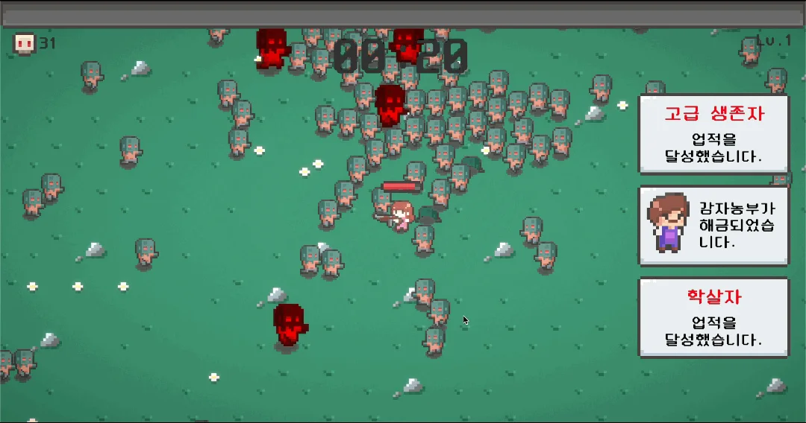
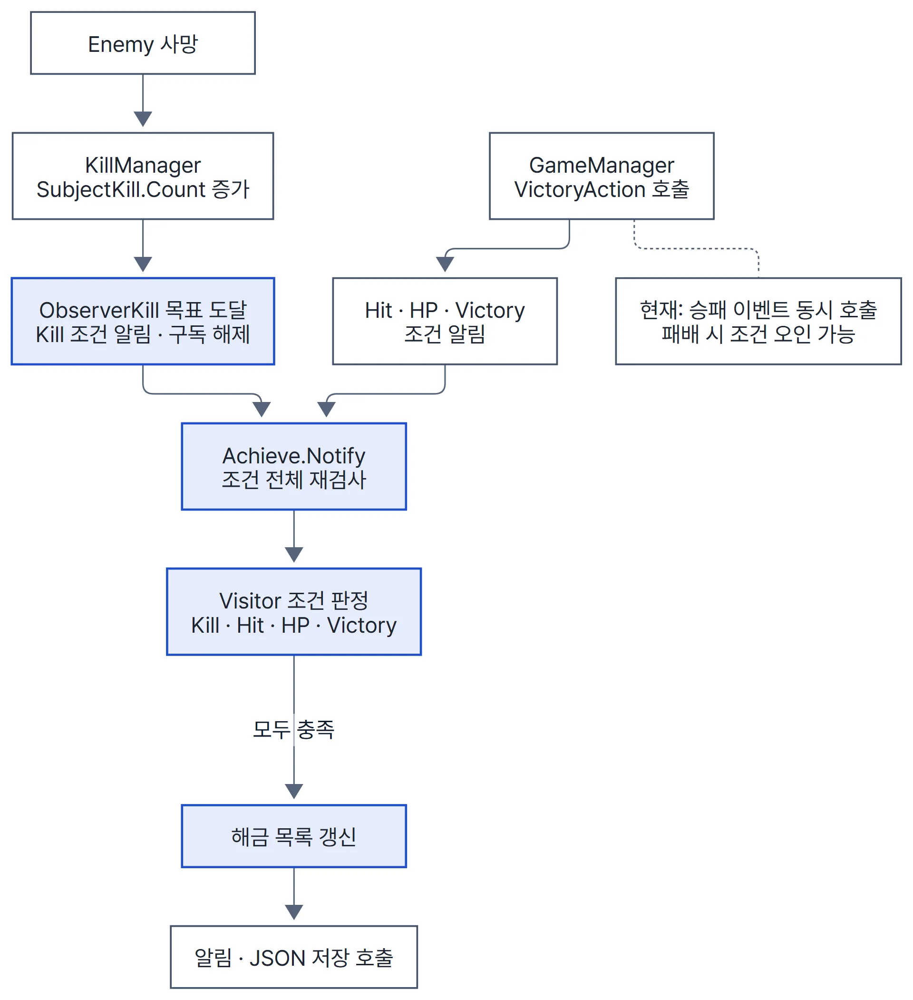
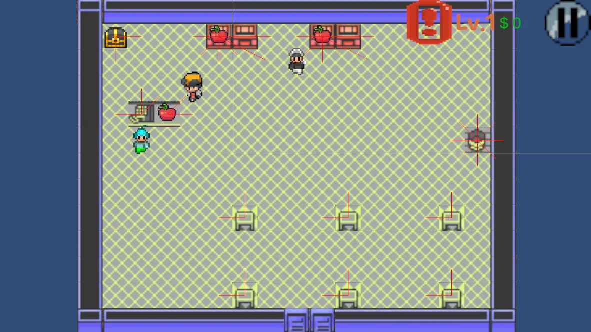

부록 · 1인 Unity 프로젝트
IAmSurvivor
- 문제
- 업적 조건은 처치 수, 무피격 승리, 체력 비율 승리, 누적 승리처럼 성격이 다릅니다. 조건마다 게임 로직에 if문을 넣으면 조건이 늘 때마다 GameManager가 커집니다.
- 판단
- 검사 시점과 판정 방법을 나눴습니다. 업적은 조건 값이 바뀌었다는 알림을 받을 때만 깨어나고, 판정은 Visitor 한 곳에서 합니다.
- 구현
- 단순 해금(2024-02, 258f3ec) → 알림 구조(04, 260515f) → 조건 객체·Visitor 판정(05, 3202bce) 순서로 다시 짰습니다. 알림을 받은 업적은 자기 조건 목록 전체를 검사합니다(AchieveCondition.cs L3–34 · Achieve.cs L27–64).
- 결과
- 이미 달성한 업적의 조건이 다시 구독되던 문제를 고쳐(1f21e14), 달성한 조건은 알림 대상에 다시 붙지 않습니다.


2024.02~2024.07 · 1인 · Unity 2021.3 · 2D 생존 액션 · WebGL 빌드
| 한 일 | 근거 |
|---|---|
| JSON 저장이 WebGL 배포 뒤 깨진 문제를 저장 경로 persistentDataPath 이동과 빈 파일 처리로 수정 | 614c7c3 |
| 1인 작업도 이슈 번호 브랜치와 PR로 나눠 진행 | PR #39 병합 aa22be1 |


요식업자로 살아남기
2024.10~11(커밋 기준, 2025.02 후속 커밋 두 건) · 1인 · Unity 2D · 기획반 제공 기획서


| 한 일 | 근거 |
|---|---|
| 계산대 점유를 손님·방해 캐릭터(빌런)의 공통 타입 슬롯 하나로 표현해 둘 중 하나만 점유 | CashierDesk.cs L16 · b9b402b |
| 시설별 빌런 4종은 플레이어 주변 감지와 연속 감지 시간에 따른 소멸을 기반 클래스에서 공유하고, 시설별 행동만 재정의 | Villain.cs L16–33 |
| 조리대·계산대·테이블마다 반복되던 주변 탐색을 공통 상호작용 영역으로 통합 | InteractiveObject.cs L5–57 |
| 음식·돈·쓰레기처럼 들고 다니는 물건의 중복 코드를 기반 클래스 하나로 통합 | 015caa3 |